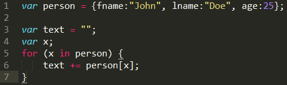

Looping in Ruby vs. Looping in JavaScript
Created By Sagar Rathi
Date: 11/23/2014
Looping in JavaScript
For Loop
When you know how many times you want to loop. When you are iterating through the indices of an array. When you have some sort of counter.
For-in Loop
When you are iterating over the properties of an object.
While Loop
When you may be unsure of the number of times to loop. When you want to loop while some condition is true.
Do-While Loop
When you want it to loop at least once before checking if the condition is true.
Looping in Ruby
For Loop
When you know how many times you want to loop. When you are iterating through the indices of an array. When you have some sort of counter.
Until Loops
Until loops are almost identical to while loops except that they will loop as long as the conditional statement is false. The while loop will loop while the condition is true, the until loop will loop until the condition is true. This example is the functional equivalent of the while loop example, except using an until loop, until i == 10 . The variable is incremented by one until its value equals ten.
While Loop
While loops will execute all of the statements contained within them as long as the conditional statement remains true. In this example, the loop continually increases the value of the variable i by one. As long as the conditional statement i < 10 is true, the loop will continue executing the statement i += 1 which adds one to the variable.
Times Loop
The times loop can be used on any variable containing a number or used on a number itself. In the following example, the first loop is run 3 times and the second loop is run however many times is input by the user. If you input 12, it would run 12 times. You'll notice that the times loop uses the dot syntax (3.times do) rather than the keyword syntax used by the while and until loop. This has to do with how the times loop works under the hood but it's used in the same way a while or until loop is used.
Each Loop
The each loop is perhaps the most useful of all the loops. The each loop will take a list of variables and run a block of statements for each of them. Since almost all computing tasks use lists of variables and have to do something with each of them in the list, the each loop is by far the most common loop in Ruby code. One thing to note here is the argument to the loop's block of statements. The value of the current variable the loop is looking at is assigned to the variable name in pipe characters, which is |n| in the example. The first time the loop runs, the n variable will be equal to "Fred," the second time the loop runs it will be equal to "Bob" and so on.
Conclusion
JavaScript support basic loops such as "for" and "While", but Ruby, provides with lot of powerful looping methods such as "each", "times", "until" etc.